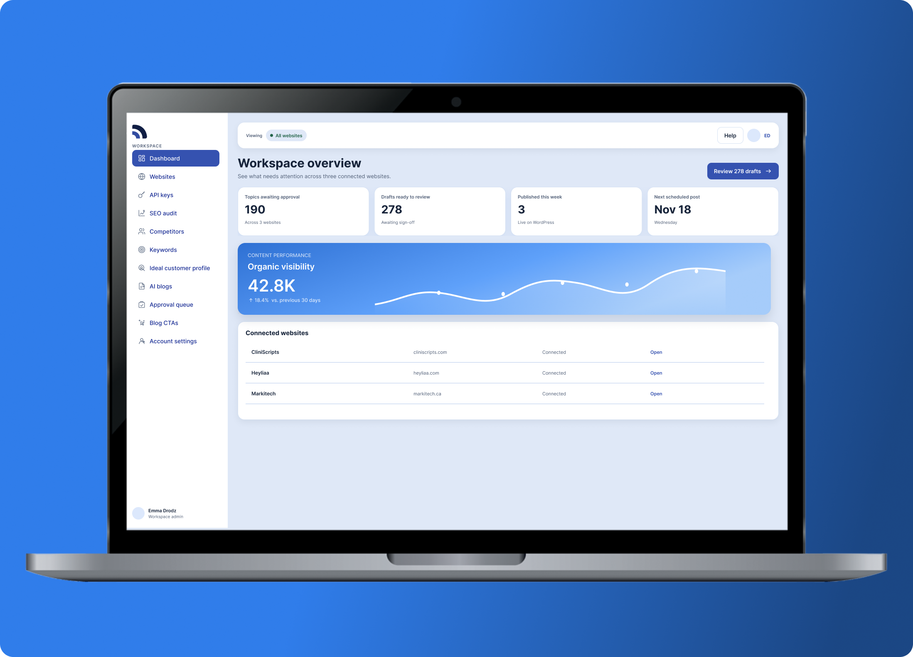
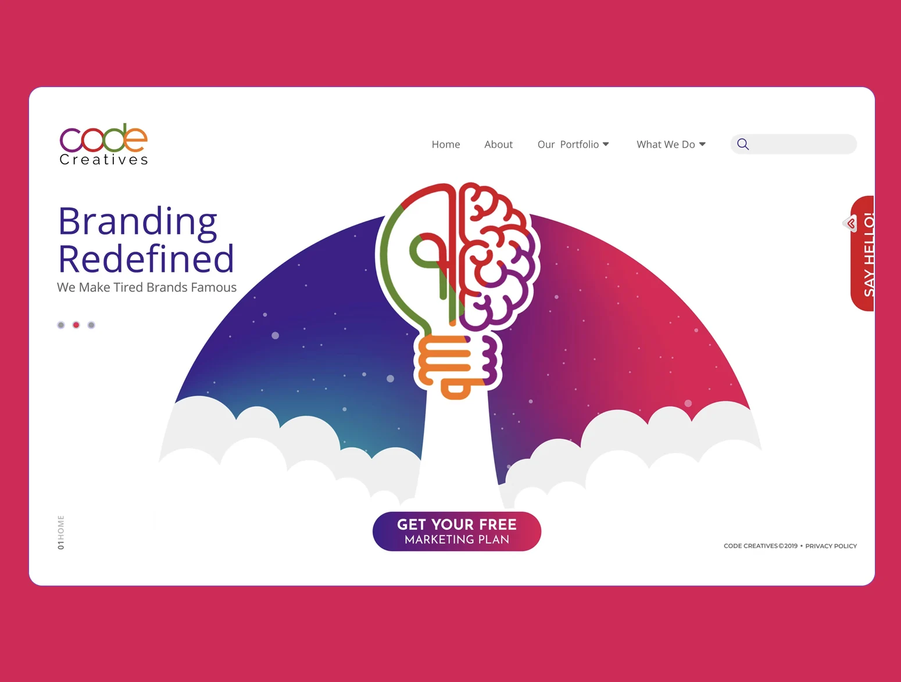

Papers → product
Papers → productTurning clinical papers, forms and graphs into a structured care-management product, from requirements and prioritization through implementation and QA.
Hello I’m Hadiqa
Currently designing complex, AI-enabled products
with Figma, rapid prototyping and agentic AI
Tools I use
 Figma
Figma Canva
Canva Microsoft Clarity
Microsoft Clarity Google Analytics
Google Analytics Framer
FramerSelected work
Papers → productTurning clinical papers, forms and graphs into a structured care-management product, from requirements and prioritization through implementation and QA.
I helped evolve CliniScripts beyond documentation into a broader EMR experience that connects care delivery, scheduling, billing and clinical resources.

Designing one multi-site workspace for reviewing AI-assisted content, planning publishing and turning SEO evidence into focused action.

A playful agency website using bold gradients, illustrated storytelling and approachable team profiles to make the brand feel energetic and memorable.
Visual practice
Selected visual communication, campaigns and art practice, work that continues to shape how I use story, colour and composition digitally.

About
I’m a product designer working across discovery, user flows, high-fidelity UI, design systems, implementation support and product QA. My current work focuses on AI-enabled healthcare products, where I collaborate with clinical, technical and business stakeholders to make complex experiences feel clear and trustworthy.
Start a conversation